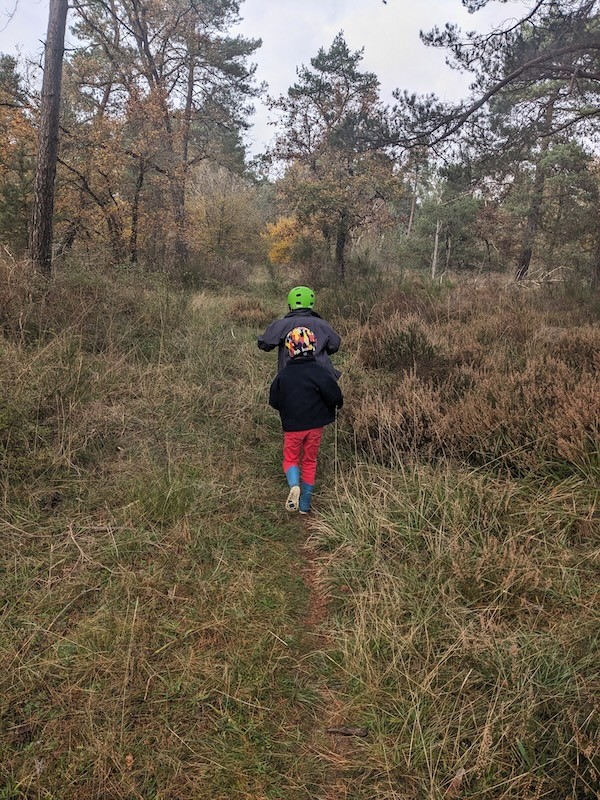

Meilleurs voeux pour 2025!

(Montrouge, December 2023)
- Muholland Drive: Main Title Theme, Muholland Drive, Angelo Badalamenti
- Peace Prayer, All is Sound, The Cosmic Tones Research Trio
- Houses Tilting Towards The Sea, The Cycle Of Days & Seasons, Hood
- Dear Old Friend (for Alan Woodard), Four, Bill Frisell
- Cello Suite No. 4 in E-Flat Major, BWV 1010: I. Prélude, J.S. Bach: Suites for Cello Solo, Vol. 2, Pieter Wispelwey
- ORKA, Gitarra Lekeitioak (Onomatopeikoa II), Joseba Irazoki
- Shrine (Aether), Tender Memebranes, Marja Ahti
- All Life Long (for organ), All Life Long, Kali Malone
- Tavener: The Lamb, Sir John Tavener: Sacred Music, Christopher Robinson
- Pushed, Pushed Streets, Michael Morley
- Slow Car, Hostile Environments, Richie Culver
- Avril 14th, Repertoire, Shane Parish